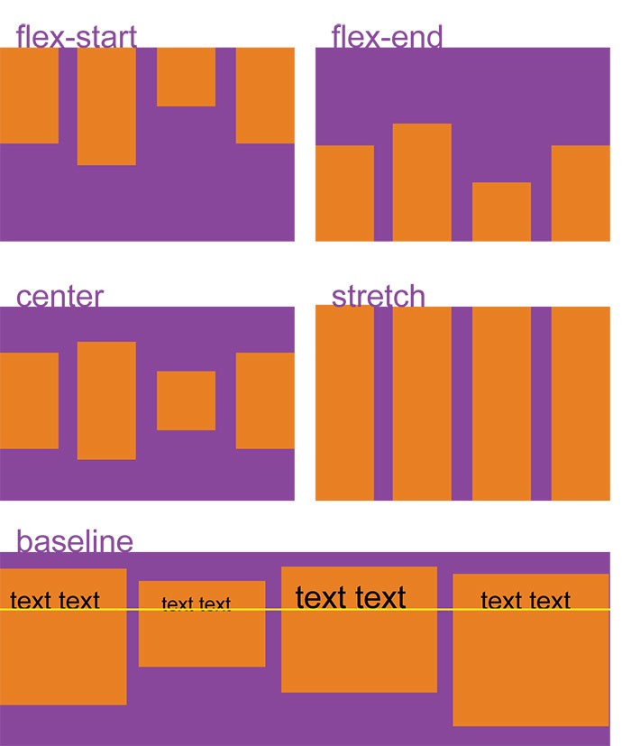

Виды селекторов
Селектор потомков
ul li {text-transform: uppercase;} — выберет все элементы li, являющиеся потомками всех элементов ul;
p.first a {color: green;} — данный стиль применится ко всем ссылкам, потомкам абзаца с классом first;
p .first a {color: green;} — если добавить пробел, то будут стилизованы ссылки, расположенные внутри любого тега класса .first, который является потомком элемента <p>;
.first a {color: green;} — данный стиль применится к любой ссылке, расположенной внутри другого элемента, обозначенного классом .first.
Дочерний элемент
Дочерний элемент является прямым потомком содержащего его элемента. У одного элемента может быть несколько дочерних элементов, а родительский элемент у каждого элемента может быть только один. Дочерний селектор позволяет применить стили только если дочерний элемент идёт сразу за родительским элементом и между ними нет других элементов, то есть дочерний элемент больше ни во что не вложен.
Например, p > strong — выберет все элементы strong, являющиеся дочерними по отношению к элементу p.
Сестринксий элемент
Сестринские отношения возникают между элементами, имеющими общего родителя. Селекторы сестринских элементов позволяют выбрать элементы из группы элементов одного уровня:
— h1 + p — выберет все первые абзацы, идущие непосредственно за любым тегом <h1>, не затрагивая остальные абзацы;
— h1 ~ p — выберет все абзацы, являющиеся сестринскими по отношению к любому заголовку h1 и идущие сразу после него.
Вес селекторов
По убыванию
style="" — 1,0,0,0
#id — 0,1,0,0
.class — 0,0,1,0
[attr=value] — 0,0,1,0
LI — 0,0,0,1
* — 0,0,0,0
У стилей, заданных в атрибуте style, на первой позиции будет единица — 1,0,0,0. Это самая высокая специфичность, которая перевешивает свойства, заданные другими способами.
Переопределить стили, заданные в style, можно дописав !important к значению свойства в таблице стилей.
Обратный вариант — универсальный селектор *, он не имеет веса: 0,0,0,0.
По возрастанию
LI — 0,0,0,1
UL LI — 0,0,0,2
.orange — 0,0,1,0
.orange A SPAN — 0,0,1,2
#page .orange — 0,1,1,0
Линейный градиент

Свойство display
Многоцелевое свойтсво, которое определяет, как элемент должен быть показан в документе.
block — Элемент показывается как блочный. Применение этого значения для строчных элементов, например <span>, заставляет его вести подобно блокам — происходит перенос строк в начале и в конце содержимого;
inline — Элемент отображается как строчный. Использование блочных элементов, таких, как <div> и <p>, автоматически создаёт перенос и показывает их содержимое с новой строки. Значение inline отменяет эту особенность, поэтому содержимое блочных элементов начинается с того места, где окончился предыдущий элемент;
inline-block — Это значение генерирует блочный элемент, который обтекается другими элементами веб-страницы подобно строчному элементу. Фактически такой элемент по своему действию похож на встраиваемые элементы (вроде <img>). При этом его внутренняя часть форматируется как блочный элемент, а сам элемент — как строчный.
inline-table — Определяет, что элемент является таблицей, как при использовании <table>, но при этом таблица является строчным элементом и происходит её обтекание другими элементами, например, текстом.
inline-flex — Элемент ведёт себя как строчный и выкладывает содержимое согласно флекс-модели.
flex — Элемент ведёт себя как блочный и выкладывает содержимое согласно флекс-модели.
list-item — Элемент выводится как блочный и добавляется маркер списка.
none — Временно удаляет элемент из документа. Занимаемое им место не резервируется, и веб-страница формируется так, словно элемента и не было. Изменить значение и сделать вновь видимым элемент можно с помощью скриптов, обращаясь к свойствам через объектную модель. В этом случае происходит переформатирование данных на странице с учётом вновь добавленного элемента.
run-in — Устанавливает элемент как блочный или строчный, в зависимости от контекста.
table — Определяет, что элемент является блочной таблицей, подобно использованию <table>.
table-caption — Задаёт заголовок таблицы, подобно применению <caption>.
table-cell — Указывает, что элемент представляет собой ячейку таблицы (<td> или <th>).
table-column — Назначает элемент колонкой таблицы, словно был добавлен <col>.
table-column-group — Определяет, что элемент является группой одной или более колонок таблицы, как при использовании <colgroup>.
table-footer-group — Используется для хранения одной или нескольких строк ячеек, которые отображаются в самом низу таблицы. По своему действию сходно с работой <tfoot>.
table-header-group — Элемент предназначен для хранения одной или нескольких строк ячеек, которые представлены вверху таблицы. По своему действию сходно с работой <thead>.
table-row — Элемент отображается как строка таблицы (<tr>).
table-row-group — Создаёт структурный блок, состоящий из нескольких строк таблицы, аналогично действию <tbody>.
Отступы
Принципы отступов для гибкости Вёрстки
- Отступы задаются от предыдущего элемента к следующему;
- Отступы задаются только между соседними элементами в потоке;
- Последнему элементу группы нужно обнулять отступ;
- Нельзя задавать отступы БЭМ-блокам.
Позиционирование

CSS — свойства
Свойства блока
opacity: 1; — прозрачность блока от 0 до 1
border: 3px solid red; — границы блока (solid-сплошная, dashed-штрипухтирная, dotted-точки, double-двойная);
border-radius: 30px — закругление углов. (border-top-left-radius верхний левый)
outline — границы блока, которые не учитываются в блочной модели
box-shadow: 5px-вертикаль 3px-горизонт 10px-размытость блока #000-цвет блока — отвечает за тень блока. insent — отражает место тени в другом углу
visibility: visible; — визуально удаляет блок, однако в коде сохраняются параметры
Свойства текста
font-family: — шрифты
font-size: — размер шрифта (em, rem, px, %)
text-indent: 10px; — красная строка
letter-spacing: — расстояние между буквами
font-weght: block; — жирность текста от 100 до 900. Ещё lighter
color: rgba (0, 0, 0, 1) — цвет текста (r-красный, g-зелёный, b-голубой, a-прозрачный от 0 до 1)
line-height: — высота строки
font-style: — наклонность шрифта (oblique, itakic, normal)
vertical-align: — вертикальное выравнивание текста. Не работает с display: block
text-align: left/right/center/justify; — расположение текста. justify — на всю ширину строки.
text-transform: ; — регистр букв. none; по умолчанию, uppercase; ВЕРХНИЙ РЕГИСТР ТЕКСТА, capitalize; первая буква каждого слова ВЕРХНЕГО РЕГИСТРА, lowercase; строчный текст
font: 400 15px / line-heght шрифт — всё вместе: (жирность шрифта, размер, / высота строки и шрифт)
text-shadow: 5px-вертикаль 3px-горизонт 10px-размытость текста #000-цвет блока — отвечает за тень текста
Свойства фона
background-color: rgba(0 0 0 1); — цвет фона
background-color: transparent — сброс цвета по умолчанию
background-image: url("#’) - фон картинкой
background-position: center center; — расположение картинки (по сторонам, единицам измерения)
background-repeat: no-repeat; — отменяет повтор изображения в случае несоответствия размера (repeat-разрешает по умолчанию)
background-size: — расположение изображения на весь фон (cover) или расположение полностью изображения на фоне.
background: цвет url(img) no-repeat center center/cover — сокращённый селектор для использования всех свойств
Свойства таблиц и списков
border-collapse: collapse — убирает промежутки между ячейками
list-style: none; — удаляет маркировку в списке
Разные свойства
cursor: pointer; — при наведении на кнопку делает курсор рукой
Вес шрифта
Значения от 100 до 900, примерно, соответствуют следующим распространённым именам насыщенности:
| Значение | Общее название |
|---|---|
| 100 | Тонкий (Волосяной) Thin (Hairline) |
| 200 | Дополнительный светлый (Сверхсветлый) Extra Light (Ultra Light) |
| 300 | Светлый Light |
| 400 | Нормальный Normal |
| 500 | Средний Medium |
| 600 | Полужирный Semi Bold (Demi Bold) |
| 700 | Жирный Bold |
| 800 | Дополнительный жирный (Сверхжирный) Extra Bold (Ultra Bold) |
| 900 | Чёрный (Густой) Black (Heavy) |
Background
Универсальное свойство background состоит из восьми других свойств (в скобках указано значение по умолчанию, которое имеет каждое из них):
-
background-image: url('ссылка на img');— позволяет в качестве фона устанавливать обычные изображения (например, PNG, SVG, JPG, GIF, WebP) и градиенты. По умолчанию данное свойство имеет значение none.
Градиенты бывают нескольких видов: линейный, радиальный или конический градиент.
Более подробно по ссылке в описании темы
-
background-position: 0 0;— задаёт позицию фонового изображения (или градиента). Значение по умолчанию: 0% 0% (помещает изображение в верхний левый угол).
Единицы измерения — px и %
Первое значение означает расстояние по горизонтали от левой стороны. Второе по вертикали от верха.
Более подробно по ссылке в описании темы
-
background-size: auto;— масштабирует фоновое изображение согласно заданным размерам. По умолчанию оно имеет значение auto.
Более подробно по ссылке в описании темы
-
background-repeat: repeat; — определяет должно ли повторяться фоновое изображение, а если да, то как.
Более подробно по ссылке в описании темы
-
background-attachment: scroll; — определяет как будет перемещаться фон относительно области просмотра браузера и элемента для которого он установлен.
Более подробно по ссылке в описании темы
-
background-origin: padding-box; — определяет область для рисования фона.
Более подробно по ссылке в описании темы
-
background-clip: border-box; — очень похож на background-origin, но в отличие от него он обрезает фон, а не изменяет его размер.
background-clip имеет точно такие же значения (border-box, padding-box и content-box), но в качестве значения по умолчанию выступает border-box.
Более подробно по ссылке в описании темы
-
background-color: transparent; — применяется для установления сплошного цвета в качестве фона элемента. По умолчанию данное свойство имеет значение transparent (прозрачный цвет).
Более подробно по ссылке в описании темы
Flexbox
-
display: flex; — устанавливает свои правила для дочерних элементов независимо блочные или строчные они
Основная ось значится горизонталь по умолчанию

-
Св-во flex-direction: row/column;
-
Св-во flex-direction: column-reverse; — аналогично reverse работает и с row
-
Св-во justify-content: ; — действует на основную ось

-
Св-во align-items: ; — действует на второстепенную ось

-
ПРИМЕР ДЕЙСТВИЯ FLEXBOX (св-ва):
flex-direction: row/column;
justify-content: center;
align-items: center;
-
Св-во align-self: ;
-
flex-basis
Отвечает за изначальный размер элементов до того, как они будут изменены другими свойствами CSS Flexbox:
flex-basis влияет на размер элементов вдоль главной оси. Давайте посмотрим, что случится, если мы изменим направление главной оси:
Заметьте, что нам пришлось изменить и высоту элементов: flex-basis может определять как высоту элементов, так и их ширину в зависимости от направления оси.
-
flex-grow
Это свойство немного сложнее. Для начала зададим блокам одинаковую ширину в 120px:
По умолчанию значение flex-grow равно 0. Это значит, что блокам запрещено увеличиваться в размерах. Зададим flex-grow равным 1 для каждого блока:
Теперь блоки заняли оставшееся место в контейнере. Но что значит flex-grow: 1? Попробуем сделать flex-grow равным 999:
И... ничего не произошло. Так получилось из-за того, что flex-grow принимает не абсолютные значения, а относительные. Это значит, что не важно, какое значение у flex-grow, важно, какое оно по отношению к другим блокам:

Вначале flex-grow каждого блока равен 1, в сумме получится 6. Значит, наш контейнер разделён на 6 частей. Каждый блок будет занимать 1/6 часть доступного пространства в контейнере. Когда flex-grow третьего блока становится равным 2, контейнер делится на 7 частей: 1 + 1 + 2 + 1 + 1 + 1. Теперь третий блок занимает 2/7 пространства, остальные — по 1/7. И так далее.
flex-grow работает только для главной оси, пока мы не изменим её направление.
-
flex-shrink
Прямая противоположность flex-grow. Определяет, насколько блоку можно уменьшиться в размере. flex-shrink используется, когда элементы не вмещаются в контейнер. Вы определяете, какие элементы должны уменьшиться в размерах, а какие — нет. По умолчанию значение flex-shrink для каждого блока равно 1. Это значит, что блоки будут сжиматься, когда контейнер будет уменьшаться.
Зададим flex-grow и flex-shrink равными 1:
Теперь поменяем значение flex-shrink для третьего блока на 0. Ему запретили сжиматься, поэтому его ширина останется равной 120px:
flex-shrink основывается на пропорциях. То есть, если у первого блока flex-shrink равен 6, а у остальных он равен 2, то, это значит, что первый блок будет сжиматься в три раза быстрее, чем остальные.
-
flex
Заменяет flex-grow, flex-shrink и flex-basis. Значения по умолчанию: 0 (grow) 1 (shrink) auto (basis).
Создадим два блока:
.square#one {
flex: 2 1 300px;
}
.square#two {
flex: 1 2 300px;
}У обоих одинаковый flex-basis. Это значит, что оба будут шириной в 300px (ширина контейнера: 600px плюс margin и padding). Но когда контейнер начнет увеличиваться в размерах, первый блок (с большим flex-grow) будет увеличиваться в два раза быстрее, а второй блок (с наибольшим flex-shrink) будет сжиматься в два раза быстрее:
Ещё больше возможностей свойства вы можете найти в анимированном руководстве по CSS flex.
-
Дополнительно
Как с CSS Flexbox меняется размер?
Когда увеличивается первый блок, он не становится в два раза больше второго, и когда уменьшается второй, он также не становится в два раза меньше первого. Это происходит из-за того, что flex-grow и flex-shrink отвечают за темп роста и сокращения.
Немного математики
Начальный размер контейнера: 640px. Вычтем по 20px с каждой стороны для padding, и у нас останется 600px для двух блоков. Когда ширина контейнера становится равной 430px (потеря в 210px), первый блок (flex-shrink: 1) теряет 70px. Второй блок (flex-shrink: 2) теряет 140px. Когда контейнер сжимается до 340px, мы теряем 300px. Первый блок теряет 100px, второй — 200px. То же самое происходит и с flex-grow.
Если вы также интересуетесь CSS Grid, можете ознакомиться с нашей статьёй, где мы рассматриваем Flexbox и Grid.